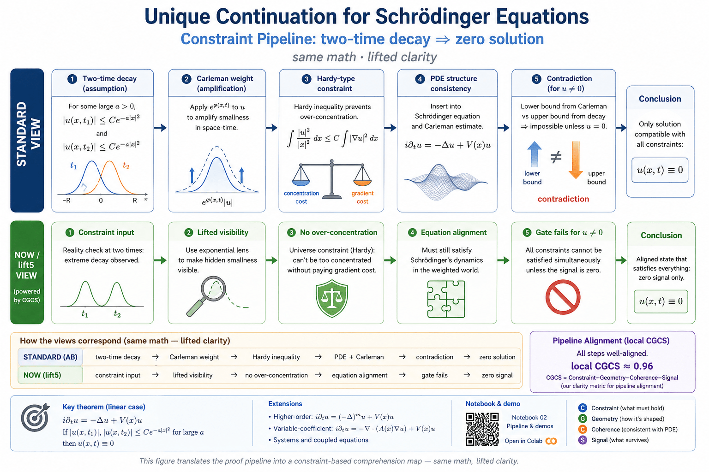
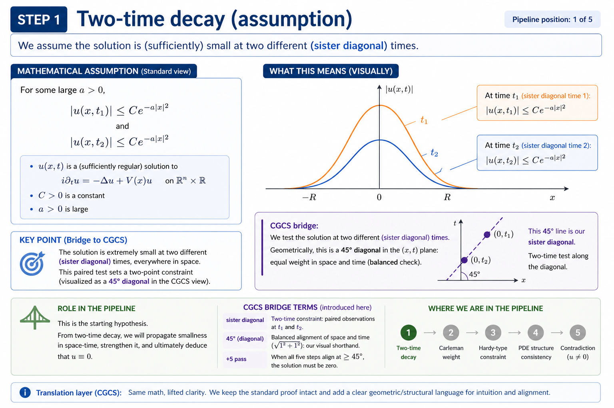
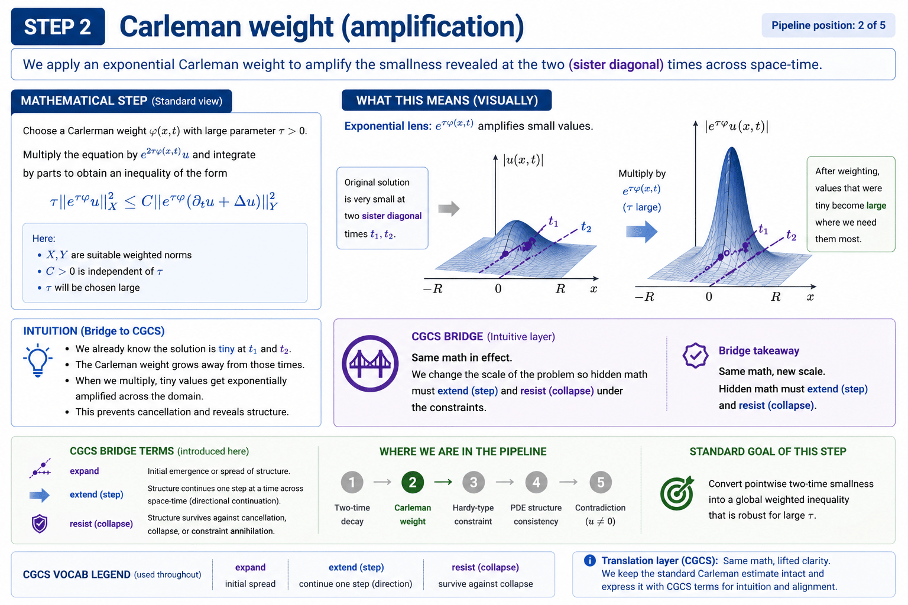
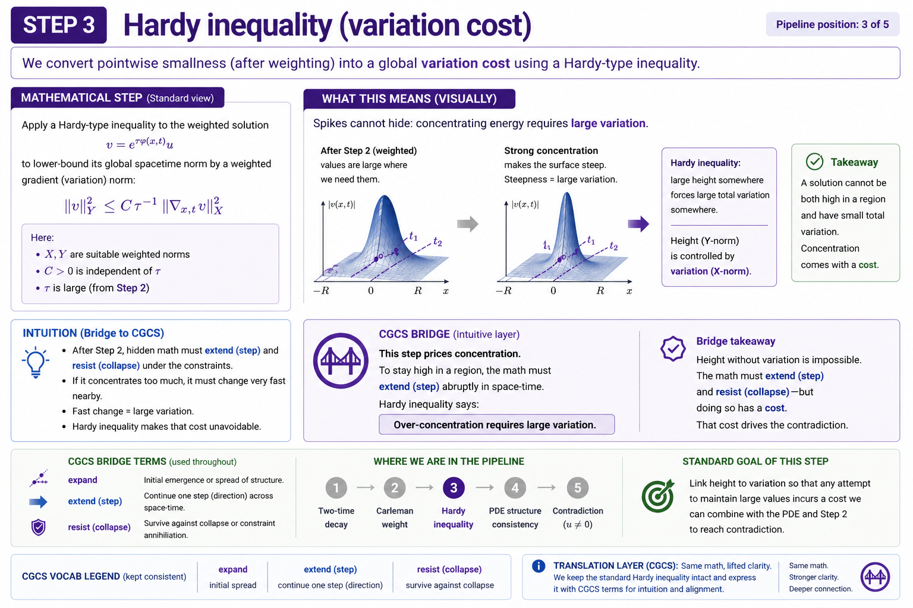
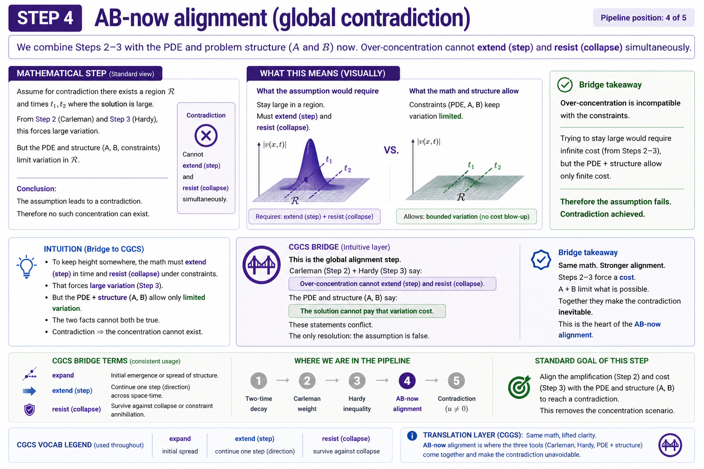

Unique Continuation Constraint Pipeline
A max-CGCS bridge note for Schrödinger unique continuation: two-time decay → Carleman weight → Hardy-type inequality → contradiction → the zero solution.
One-line theorem translation
If a Schrödinger solution decays sufficiently fast at two different times, then the only solution consistent with the equation is the trivial solution:
AB accuracy: “45°,” “+5,” and “sister diagonal” are comprehension translations, not standard PDE theorem vocabulary. Standard math remains the foundation; NOW language lifts comprehension.
Speaker’s claim
“Unique continuation principles describe the propagation of zeros of solutions to PDEs. Motivated by Hardy's uncertainty principle, Escauriaza, Kenig, Ponce, and Vega showed that if a linear Schrödinger solution decays sufficiently fast at two different times, the solution must be trivial. We extend these results to higher-order Schrödinger equations and variable-coefficient Schrödinger equations.”
Speaker: Xueying Yu, Oregon State University
Pipeline diagram
The bridge note turns the seminar logic into a one-to-one pipeline: each standard proof step has a NOW / lift5 CGCS translation.
Decay
Two-time smallness at \(t_1\) and \(t_2\). Candidate solution is tested twice.
Weight
Carleman weight \(e^{\phi(x,t)}\) amplifies the small region.
Hardy
Hardy-type inequality blocks over-concentration without variation cost.
Contradiction
Assuming \(u\neq0\) conflicts with decay + weight + PDE consistency.
The zero solution
Only \(u\equiv0\) satifies all constraints.
Best diagrams / figures to add to repo
Put these files in the after-seminar report folder. The page will render them automatically once the image files are added.

Missing image:figures/uc_pipeline_v3_standard_vs_now.png
Add the best Standard vs NOW/lift5 CGCS diagram here.'}))">

Missing image:figures/step1_two_time_decay.png'}))">

Missing image:figures/step2_exponential_weight.png'}))">

Missing image:figures/step3_hardy_variation_cost.png'}))">

Missing image:figures/step4_ab_now_alignment.png'}))">
AB theorem anchor
The simplified classical model is:
If the solution satisfies two fast-decay conditions,
with \(a\) sufficiently large under the theorem’s hypotheses, then:
Hardy / Carleman proof intuition
Hardy-type constraint
Entry-level translation: a function cannot become too concentrated or too sharply decayed without paying a gradient / variation cost.
Carleman weight
Entry-level translation: the weight magnifies the region where smallness matters, turning decay into a strong estimate.
AB ↔ NOW alignment
| AB / standard proof step | NOW / lift5 CGCS translation | Comprehension function |
|---|---|---|
| Decay at two times \(t_1,t_2\) | Two-time = sister diagonal constraint input | Test candidate solution twice |
| Carleman weight | Apply weight NOW | Make smallness count under constraints |
| Hardy-type inequality | 45° / +5 constraint gate | No over-concentration |
| Contradiction for \(u\neq0\) | Non-zero can satisfy some constraints, but not all simultaneously. | Exclude invalid candidate descriptions |
| Conclusion \(u\equiv0\) | Only zero aligns | Unique continuation confirmed |
CGCS summary
Scores are internal CGCS comprehension estimates. They measure proof-structure alignment and reader accessibility, not formal theorem novelty.
Glossary
| Term | Entry-level meaning |
|---|---|
| Solution | A mathematical description that satisfies the equation. |
| Trivial solution | The zero solution: \(u(x,t)\equiv0\). |
| Non-trivial solution | Any solution that is not zero somewhere. |
| Unique continuation | Local vanishing or strong smallness can determine the global solution. |
| Hardy-type inequality | A constraint linking concentration and variation. |
| Carleman estimate | A weighted estimate used to prove unique continuation. |
| 45° / +5 / sister diagonal | CGCS translation language for constraint-first comprehension. |
Before a dedicated repo / full paper
This page is an init after-seminar bridge. The dedicated repo can later turn this into an arXiv5867-ready paper with theorem statements, assumptions, precise estimates, reproducible figures, and proof-chain notes.
unique-continuation-constraint-lab/
README.md
paper/
main.tex
references.bib
sections/
01_intro.tex
02_theorem_and_assumptions.tex
03_carleman_weights.tex
04_hardy_type_inequalities.tex
05_contradiction_chain.tex
06_cgcs_translation.tex
notebooks/
01_decay_weight_visualization.ipynb
02_hardy_gate_demo.ipynb
03_contradiction_pipeline.ipynb
src/
weights.py
hardy_demo.py
plotting.py
figures/
uc_pipeline_v3_standard_vs_now.png
step1_two_time_decay.png
step2_exponential_weight.png
step3_hardy_variation_cost.png
step4_ab_now_alignment.png
docs/
glossary.md
AB_NOW_alignment.md
Professor-share framing:
This is a seminar bridge note translating the standard unique-continuation proof structure into a visual constraint pipeline. It preserves the AB proof sequence while adding an explicit comprehension layer for entry readers.